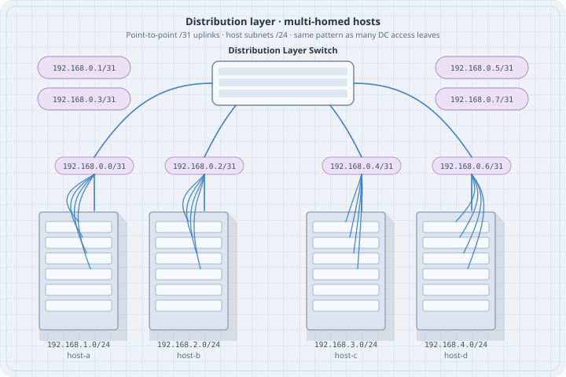
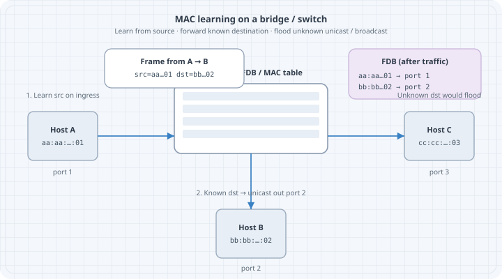

Ethernet & MAC Learning
Ethernet & MAC Learning
Layer 2 is where frames move inside a broadcast domain. Before VLANs and spanning tree, master Ethernet addressing, flooding, and MAC learning—the behaviors every switch and bridge still implements.

Learning goals
By the end of this chapter you can:
- Explain source learning and unknown unicast flooding
- Read and interpret a MAC/FDB table
- Predict ARP’s role binding IP to MAC on-link
- Build a small bridged lab with Linux or Containerlab
- Diagnose “same subnet but no ping” with neigh + FDB + capture
Concepts
Frame essentials
An Ethernet frame carries:
- Destination MAC
- Source MAC
- Ethertype (e.g. IPv4
0x0800, ARP0x0806, IPv60x86DD, 802.1Q tag)
- Payload
- FCS (hardware)
Switches forward using destination MAC and the VLAN context (next chapter). They learn from source MAC.
Learning and flooding
| Event | Switch action |
|---|---|
| Frame arrives with source MAC S on port P | Learn S → P (for that VLAN) |
| Destination MAC known | Forward out that port only (not ingress) |
| Destination unknown unicast | Flood within VLAN |
| Broadcast (ff:ff:ff:ff:ff:ff) | Flood within VLAN |
| Multicast | Flood or constrain (IGMP snooping later world) |
Stale entries age out (aging timer). Moves update the port mapping—important when you relocate a VM/container.

MAC addresses
- 48-bit, usually written
aa:bb:cc:dd:ee:ff
- Locally administered vs universal bits exist; labs often show container random MACs
- Do not design security that only trusts MAC equality (easy to spoof)
ip link show eth1
# link/ether xx:xx:xx:xx:xx:xxARP: glue for IPv4 on Ethernet
On-link IPv4 needs ARP:
- Host knows dest IP is on-link (same subnet / connected route)
- Who has IP X? Tell Y — broadcast
- Reply unicast with MAC
- Neigh cache stores IP↔︎MAC
ip neigh show
ip neigh flush dev eth1 # lab use carefullyIPv6 uses Neighbor Discovery (ICMPv6) instead of ARP—same role, different messages.
Linux bridge FDB
# Create bridge and show FDB after traffic
bridge fdb show br br0
bridge link showDynamic entries learn from traffic; static entries can be added for experiments.
Lab A: two hosts, one bridge (hand or Containerlab)
Containerlab topology
name: l2-mac
topology:
nodes:
br1:
kind: linux
image: alpine:3.20
exec:
- apk add --no-cache iproute2 bridge
- ip link add name br0 type bridge
- ip link set br0 up
# attach eth1/eth2 after links exist — see note below
h1:
kind: linux
image: alpine:3.20
exec:
- apk add --no-cache iproute2 iputils
- ip addr add 10.10.0.1/24 dev eth1
- ip link set eth1 up
h2:
kind: linux
image: alpine:3.20
exec:
- apk add --no-cache iproute2 iputils
- ip addr add 10.10.0.2/24 dev eth1
- ip link set eth1 up
links:
- endpoints: ["h1:eth1", "br1:eth1"]
- endpoints: ["h2:eth1", "br1:eth2"]Operational note: Alpine bridge setup via exec may race; a mounted entrypoint.sh is more reliable:
#!/bin/sh
set -e
apk add --no-cache iproute2 bridge >/dev/null
ip link add name br0 type bridge 2>/dev/null || true
ip link set br0 up
ip link set eth1 master br0
ip link set eth2 master br0
ip link set eth1 up
ip link set eth2 up
sleep infinityBind and set as command for br1. Hosts keep simple addressing execs.
Predict
- First ping causes ARP broadcast flooded to the other host
- FDB on
br0learns h1 and h2 MACs on respective ports
- Subsequent unicast ICMP is switched, not broadcast
Observe
docker exec clab-l2-mac-h1 ping -c 3 10.10.0.2
docker exec clab-l2-mac-br1 bridge fdb show br br0
docker exec clab-l2-mac-h1 ip neigh
docker exec clab-l2-mac-h1 tcpdump -ni eth1 -e -c 20 arp or icmpFix inject
# Wrong mask on h2 — still "same numbers" but off-link behavior
docker exec clab-l2-mac-h2 ip addr flush dev eth1
docker exec clab-l2-mac-h2 ip addr add 10.10.0.2/32 dev eth1
docker exec clab-l2-mac-h2 ip link set eth1 up
docker exec clab-l2-mac-h1 ping -c 2 10.10.0.2Restore /24. Journal the symptom.
Harden
#!/usr/bin/env bash
set -euo pipefail
docker exec clab-l2-mac-h1 ping -c 2 -W 1 10.10.0.2
docker exec clab-l2-mac-br1 bridge fdb show br br0 | grep -q .
echo OKLab B: three hosts — flooding visibility
Add h3 on 10.10.0.3/24 linked to br1:eth3.
Predict: Unknown unicast to a silent host floods; after traffic, FDB constrains.
Observe: tcpdump on h3 while h1 pings h2—after learning, h3 should not see unicast ICMP (ideal case). During ARP storms or failures, you may still see broadcasts.
docker exec clab-l2-mac-h3 tcpdump -ni eth1 -c 30 &
docker exec clab-l2-mac-h1 ping -c 5 10.10.0.2MAC moves and flaps
# Simulate "move": shut one path (in multi-path labs) or change container
# Observe FDB port update and short loss
bridge fdb show br br0Duplicate MACs on two ports (misconfig or bridge loops) cause flapping—spanning tree chapter addresses loops.
Common L2 failures (pre-VLAN)
| Symptom | Likely cause |
|---|---|
| No ARP reply | Far host down, wrong cable/port, filter |
| ARP ok, no ping | Local firewall, wrong IP on host |
| Intermittent | MAC flap, duplex issues (physical), loop |
| Works after first flood only | Misread; check FDB aging and silent nodes |
Promiscuous mode and labs
Bridges and captures may require promisc on interfaces:
ip link set eth1 promisc on
tcpdump -ni eth1Containerlab links typically allow node-local captures on data interfaces.
Security digression (short)
- Port security / sticky MAC exist on enterprise gear—concept: limit learned MANs
- DHCP snooping / dynamic ARP inspection—later ops world
- For this book: understand why spoofing works at L2 so you do not mythologize the LAN
Predict worksheet (paper)
Domain with switch S and hosts A,B,C. A sends to B’s IP first time.
- Is the first frame after ARP unicast or might B’s MAC still be unknown?
- Does C receive the ARP request?
- Does C receive the ICMP echo request once FDB learned?
Answers: (1) after ARP, A knows B’s MAC—frame is unicast; switch floods only if FDB miss on B. (2) yes, ARP request is broadcast. (3) no, not if learning completed and no loop/mirror.
FRR / NOS note
Hardware switches expose show mac address-table equivalents. Linux bridge fdb is the same idea. When you use SR Linux or others later, translate:
| Intent | Linux bridge | Typical NOS language |
|---|---|---|
| Show learned MACs | bridge fdb show |
show mac table |
| Clear dynamic | bridge fdb del ... |
clear mac |
Summary
- Switches learn source MACs, forward known unicasts, flood unknowns/broadcasts
- ARP/ND bind IP to MAC on-link
- FDB + neigh + tcpdump diagnose most “L2 should work” failures
- Build bridge labs with Containerlab Linux nodes before complex VLAN designs
Next: VLANs and trunks—splitting broadcast domains without new cables.